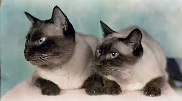

CUIDADES
Entre los cuidados de un gato son imprescindibles la vacunación y desparasitación siguiendo las indicaciones del veterinario. En general, un adulto debe vacunarse anualmente contra las enfermedades respiratorias, la leucemia y la rabia, aunque las pautas varían en función del sitio en donde residas, y desparasitarse 4 veces al año para evitar los parásitos internos. Debes dejarle comida todo el día en un lugar que sea de fácil acceso para él y donde no haya insectos o roedores. Tiene que disponer de agua fresca y limpia en otro recipiente, aunque a los gatos les encanta beber de corrientes de agua en movimiento, como pequeñas gotas que caen de un grifo mal cerrado.

Para los parásitos externos como las pulgas, piojos o garrapatas existen varios productos de fácil aplicación. Antes de utilizarlos, debemos consultar con nuestro veterinario para elegir el producto que mejor se adapte a nuestro gato y a nuestras necesidades. Otro aspecto fundamental para mantener sano y feliz a tu gato es la higiene. Debes tener una bandeja sanitaria y limpiar diariamente las deposiciones, ya que no les gusta usarla sucia y probablemente buscará otro sitio donde hacer sus necesidades.
COMPORTAMIENTO
Los gatos tienen un comportamiento único y, muchas veces, misterioso. Por cierto, tienen una gran cantidad de manías que forman parte de su carácter habitual.
Algunas veces huyen y se muestran ariscos y otras, en cambio, nos persiguen por todas las partes de la casa, buscando muestras de afecto.
ALIMENTACIÓN
Los gatos son animales carnívoros, por lo que tienen que incluir la carne en su dieta. A diferencia de los perros, los gatos nunca podrían ser vegetarianos o veganos. Los felinos toman como fuente de energía principal las proteínas y necesitan mayores cantidades de éstas que las que necesitan los perros. La carne no es sólo fuente de proteínas, sino que también aporta tres nutrientes esenciales para los gatos: la taurina (para el corazón y la vista), el ácido araquidónico (para la salud de la piel y el pelaje) y la vitamina A (para el pelaje y la vista).
Para mantener a tu gato en forma, su dieta deberá contener una cantidad equilibrada de nutrientes esenciales. Una alimentación de alta calidad y completa tiene que estar especialmente formulada para aportarles la cantidad equilibrada de nutrientes que necesitan y, al mismo tiempo, tiene que ser deliciosa.
A partir de los 12 meses, un gato adulto normal y sano recibirá la alimentación adecuada con una dieta equilibrada propia para gatos adultos. Cuando alcancen una edad avanzada, aproximadamente entre los 7 y los 10 años, tendrán que cambiar a una dieta especial para gatos de edad avanzada adaptada a sus nuevas necesidades.